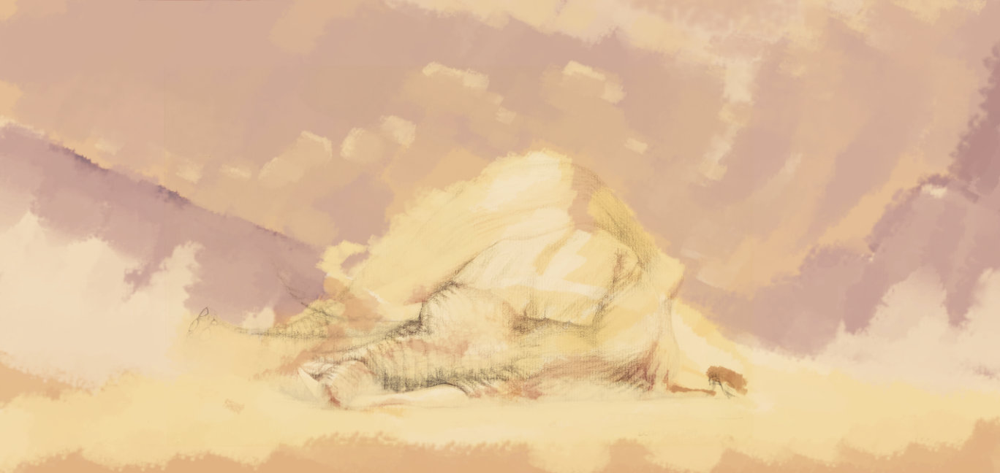
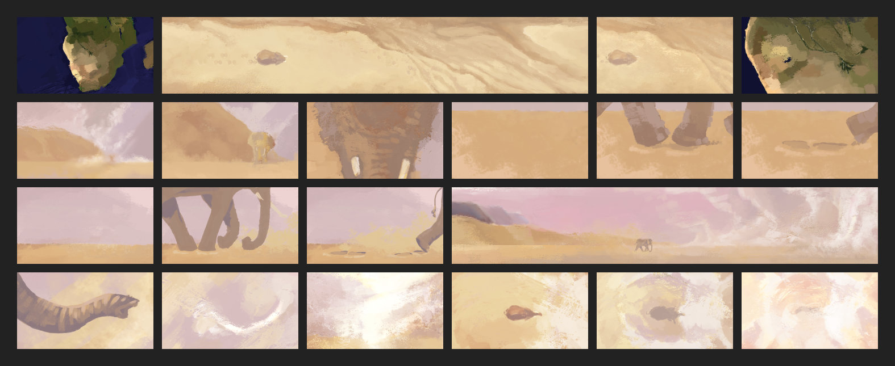
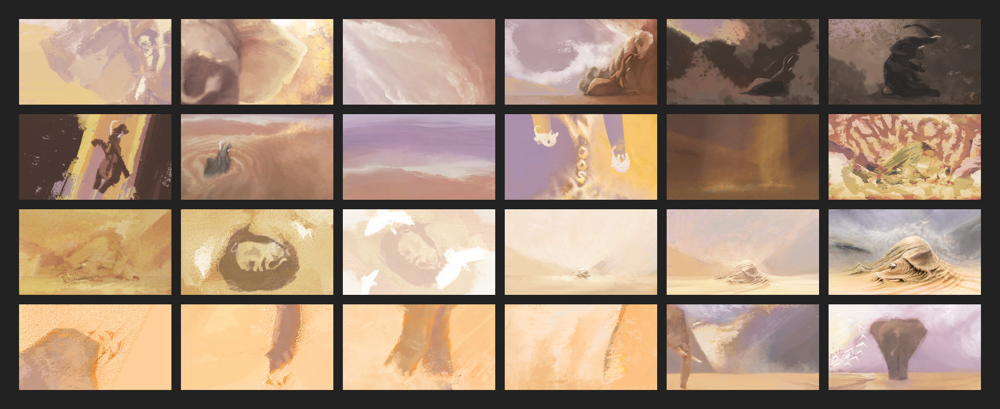

“Across different cultures and religions, [color] symbolizes feelings and concepts as varied as [emotion]. There are also psychological […] and physiological effects [of perceiving color]. The mutability of a single color with its infinite variations of tint, shade, and tone, and, further, the way it is viewed in relation to its neighboring colors, makes color an effective tool for expressing a variety of moods and emotions.” — Amid Amidi. (2011) The Art of PIXAR: The Complete Colorscripts and Select Art from 25 Years of Animation, Introduction p. 10-11. Disney Enterprises Inc. / PIXAR.
Pixar chief creative officer at the time — John Lasseter wrote the foreward to the book: The Art of PIXAR (2011), and described the use of a colorscript in an animated picture where every element “must support the emotional arc of the story,” Lasseter explained, “which is really the emotional journey of the main character,” and so he continued, “the two things that communicate the underlying emotion of a movie better than anything else are music and color. […] The character may be saying one thing, but if the color and lighting make the scene feel gloomy, or if the music is unsettling, the audience knows that something else is going on […]” and so on.
Working small and keeping the images simple helps to reveal the broad strokes of a story. The colorscript is a way to preview the emotional arc of a story all at once – at a glance – with a small image for each key moment. The collection of images presents each as it interrelates to the overall picture — to the characters and the emotions of the characters. Ralph Eggleston, Pixar's first art director in 1992 — art director on Toy Story (colorscript, 1993), Finding Nemo (colorscript, 2001) and Wall-E (colorscript, 2007) — described what the colorscript is all about: “It's all about the story; it's all about the characters.” Dice Tsutsumi, Pixar's art director on Toy Story 3 (colorscript, 2009), elaborated on the use of the colorscript in film: “It's about how you can support the story with these images and lighting concepts.” In the development of the visual and emotional rhythm of a story, the colorscript makes clear any sequence that counteracts the narrative arc or that calls for less or more color or contrast.

The Blue Umbrella (2013). © PIXAR.
The Colorscript
The colorscript for The Blue Umbrella (2013) is a memorable example (from a talk at SIGGRAPH 2013) with a clear application in the Pixar short film. The colorscript is in part limited by the story: two umbrellas meeting in the rain, and with the camera set in large part at street level. The red umbrella and the blue umbrella bring an almost iridescent color to the grey architecture of the city, and a story of an umbrella of course brings rain. And so the look and sound of the rain was carefully directed to set the mood of the story scene-by-scene: exposure times were varied and married to audio in an effort to create “soft and warm” droplets in pleasant frames and then “harsh and dry” rain in moments of despair.

The Blue Umbrella (2013), Colorscript. © PIXAR.
Director of The Blue Umbrella — Saschka Unseld shared his process for the film at SIGGRAPH in Anaheim in 2013. Saschka explained how story gives form to an emotion and the feeling serves to shape the film — art direction explores an emotion of a story in pre-production and refocuses on the simplicity of that emotion throughout production. Color is designed over a sequence of frames to visually shape high and low points along the emotional narrative.
“Prior to Pixar, no animation studio consistently mapped out color and lighting in relation to story and character through a formal colorscripting phase. The process, however, is more than seventy years old, having begun with the early 1940s Disney animated features. The artistic choreography of certain musical sequences in Fantasia, like Toccata and Fugue and Nutcracker Suite, required dozens of color conceptual sketches that effectively served as colorscripts for those sequences. Later, the production design by Tyrus Wong for Bambi advanced the use of color further. Wong's evocative inspirational artwork added an emotional dimension to color and aimed to ‘create the atmosphere, the feeling of the forest,’ instead of the largely literal and utilitarian expression of color in the earlier full-length Disney features. […] The modern resurgence of the colorscript may be traced again to Disney, and one artist in particular, Richard Vander Wende. When Vander Wende painted a colorscript for Aladdin, he had never before seen one. His inspirations were a series a color keys that Eyvind Earle had drawn for a romantic nighttime scene in Lady and the Tramp, as well as color bars (an abstract cousin of the colorscript) that had been painted for Beauty and the Beast, which was in production at the same time as Aladdin. On a single piece of 8-and-a-half-by-11-and-a-half-inch paper, Vander Wende panted a couple of dozen thumbnail-sized gouache paintings capturing scenes from the entire film.” — [Amidi, 2011.]
Designing with Color and Light
The artist can communicate things to the audience visually, and the colorscript is a visual expression of the emotion, mood, lighting and time of day and so on mapped onto one document. The coloscript is moreover a visual road-map for everybody working on a project. A lesson for the artist from a master at painting with color and light — and DreamWorks Animation background artist on Prince of Egypt (1998), The Road to El Dorado (2000) and Sinbad: Legend of the Seven Seas (2003) — Nathan Fowkes:
“Color carries with it a tremendous emotional impact. […] Different kinds of color harmonies elicit a variety of moods. […] [An artist has] to learn to think of color, and to design color, in terms of contrast, and that's why the color wheel is a useful tool because the color wheel arranges colors in terms of how they contrast with each other. […] If you don't design, you've missed an opportunity.”

“Ella after the storm.” color study (2015)
“Ella after the storm.” (2015)
Designing with color and light is – simply put – the process of arranging unity and variety. When we talk about unity of color and light — we think of stability, repetition, predictability, the mundane and the comfort of the familiar and so on. When we talk about variety of color and light — we think of surprise, chaos, unpredictability, the out of the ordinary and the uncomfortable and so on.
An artist uses value and edges – hard and soft – to effectively communicate the underlying clear statement of an image through contrast structure as well as a statement of temperature in particular in the value structure. You can squint at a painting and see the soft areas disappear into the surrounding colors, whereas the forms are seen in the definitive choices made by the artist to create the hard edges where the focus of an audience is directed. For the artist, this process is all about creating nice silhouettes early on, then designing a nice contrast between soft edges and hard edges. It's all about controlling the softness and hardness of edges to the advantage of the moment in the story. It's about controlling the subtleties in perspective, in hues, in values, in temperatures, in edges and so on, so as to have the environment serve the character moment. The artist can choose to direct an audience to focus primarily on what is in the shadow or on what is happening in the light. It's about giving the focal element the temperature gradation and value structure that sets it in a supporting environment with its silhouette against the weather, the sky and the backdrop and so on. The colorscript for White Elephant references the Namib and Kalahari desert sand and sky to establish a visual tone with a unity of setting and a continuity of scenes and so on.

White Elephant colorscript p. 1-7. (2015)
In a colorscript, in particular, nothing should stand in the way of the story. The artist creates the context for the symbols – specifically the colors – that are represented, and stages them consistently to give them meaning. This is a process of keeping the color temperature true to local, neutral color in diffuse light scenes so that the story is not always colorful — so that when the artist adds color: the color means something.
“A meaningful repetition of elements can give a beautiful, harmonious effect to a busy, contrasting image; it's one way to take all the chaos and bring it under control and it actually can become quite poetic. […] The human eye is always looking for meaningful relationships, that's what we do, and as artists we identify what moves people at that gut emotional level where art and where storytelling lives, and those things that reach people in that way, with that powerful sense of emotion, those are the principles that we rely on. […] As we design those color relationships, we use them to tell stories. We attach a specific color to a character and we can carry that all the way through a movie, and have them stand out from their environment. We can design [the color and the atmosphere of the world] around that character to remind the audience who is most important.” — Nathan Fowkes. Designing with Color and Light. Schoolism.
A profound sense of mood and environment can be evoked through atmosphere. Atmosphere softens light sources, which helps to not distract with hard and harsh edges right at the light sources. This allows the artist to exercise physically-based lighting to direct the focus on the more important contrasts in the characters and so on. Weather is an important part of atmosphere, but weather is not just about setting some mist or letting the image cool off into the distance. It's about trying sweep the audience away and why not do that with something that does so in real life — with potent, energetic and fantastic weather.

White Elephant colorscript p. 8-16. (2015)
Behind the scenes:
Register for membership behind the scenes of White Elephant.